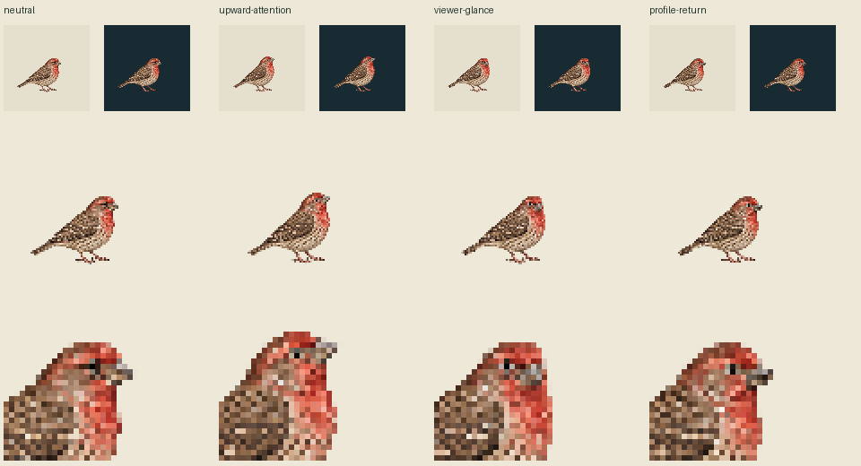

Existing drawings only. Current96px canvas/world96, density1, pivot48,75. No per-pose fit, paint, translation or body bob. Select a legacy candidate, then play exact awake→candidate→same awake at30Hz. This is a preliminary source comparison, not accepted look coverage or app rendering.
Both panels:1CSS pixel per world unit; untrimmed source canvas96CSS pixels.
